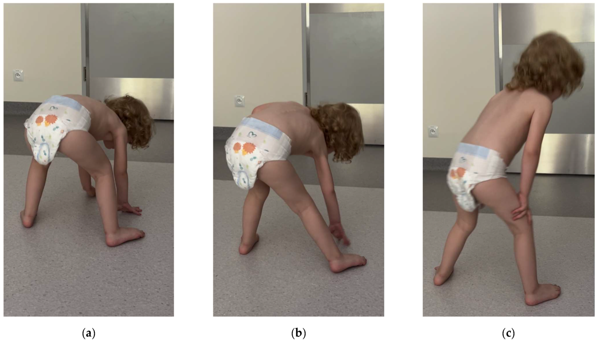

Página 9 · E6
Padrão muscular
Padrão muscular clássico: fraqueza com enzimas musculares elevadas. Músculo lesado libera conteúdo celular → eleva enzimas; podem subir TGO, LDH e outras, mas a principal para chamar atenção é a CPK.
Patologia muscular afeta com frequência músculos que vencem mais gravidade/resistência — a musculatura proximal. Queixas-proximal: levantar os braços, subir escada, levantar da cadeira. Em miopatia, a fraqueza tende a ser simétrica.
Padrão-síntese: fraqueza proximal simétrica + CPK elevada.
Gowers
Criança com miopatia genética que perde musculatura proximal: para levantar, escala o próprio corpo — levantar miopático de Gowers. Em prova, Gowers = patologia muscular (contexto frequente de neuropediatria).
Retorno ao caso 1
Fraqueza simétrica proximal (pescoço, braços, escadas) + pele (olho roxo / mão descamando) + nódulo mamário + TGO/CPK ↑ → andar músculo (miopatia). Em múltipla escolha, pode-se acertar por exclusão: não é placa, não é 1º NMS típico — precisa de gabarito no eixo muscular. Etiológico do caso: doença que une dermato + miosite + neoplasia → dermatomiosite.

Quiz — fixação
-
Qual padrão fecha topografia muscular?
Gabarito B. fraqueza proximal simétrica + CPK elevada sustenta o eixo muscular e reabre Jussara como dermatomiosite.
A placa; C 1º; D 2º. CPK alta “sem clínica” ou clínica sem enzima — aqui o par importa.
-
No caso Jussara, após mapear proximal + pele + nódulo + enzimas, o nome etiológico que une o conjunto é:
Gabarito B. dermato + miosite + neoplasia no nome/lógica.
A/C/D são outros andares/entidades. parar em “miopatia” sem fechar a colagenose de pele.